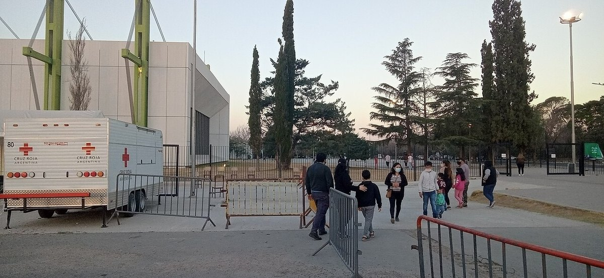

Córdoba · Vacunación
Se aplicaron 4.969 dosis en el cierre nocturno de la campaña "Las vacunas salvan vidas" en Córdoba
La jornada se hizo el viernes en siete hospitales de la Capital, de 19 a pasada la medianoche. El objetivo es completar esquemas del Calendario Nacional en todas las edades.

El cierre de la campaña provincial "Las vacunas salvan vidas" dejó 4.969 dosis aplicadas en siete hospitales de la ciudad de Córdoba, en una jornada que empezó a las 19 del viernes y se extendió hasta pasada la medianoche, según informó Nova Córdoba.
Se aplicaron primeras y segundas dosis contra el COVID-19 y vacunas del Calendario Nacional, entre ellas contra el virus del papiloma humano (VPH), la Salk contra la poliomielitis, antimeningocócicas, doble bacteriana y triple bacteriana acelular.
Participaron los hospitales provinciales de Niños, Florencio Díaz, Pediátrico, Elpidio Torres y Materno Neonatal, y los municipales Infantil y Príncipe de Asturias. La campaña, que comenzó a principios de noviembre, sumó vacunatorios de los departamentos Río Cuarto, Colón, Tercero Arriba, Santa María, Punilla, General San Martín, Unión, Río Segundo, Calamuchita, San Javier y General Roca.
Las vacunas del Calendario Nacional son obligatorias y gratuitas y se aplican en los vacunatorios de toda la provincia.
Fuente
Nova Córdoba · Ministerio de Salud de la Provincia de Córdoba